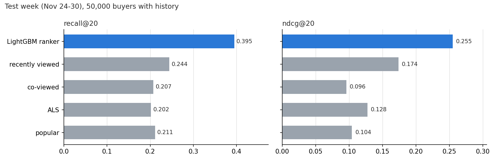
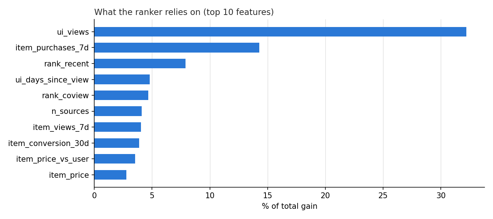
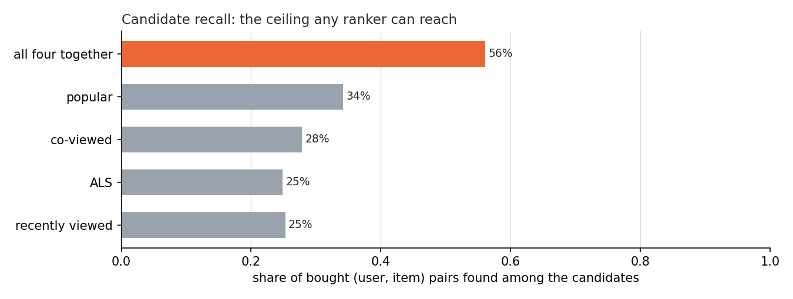

A two-stage recommender (candidate generation, then a learning-to-rank model) trained and evaluated offline on two months of real clickstream from a multi-category online store. For 50,000 buyers in the last week of November, the LightGBM ranker reaches recall@20 of 0.395 against 0.244 for the best single generator, "what the user recently viewed". The ceiling is set before ranking: 71.4% of what people buy that week is an item they had never viewed before, and only 56.0% of bought items appear among any generator's candidates.
This page shows the project's results. The methodology, the design decisions and the limitations are documented in the repository's README.
Results


How many times the user viewed the item (32.2% of the gain) and how much it sold last week (14.3%) carry almost half the model. People buy what they looked at repeatedly and what is selling now. The ALS score, the most complex signal, carries 2.4%.
The ceiling: most purchases are of items never seen before

Candidate recall is the share of bought (user, item) pairs that appear anywhere among the candidates: no ranker over these candidates can recommend what is not there. All four generators together reach 56.0%. The reason is the 71.4% above: most items bought in the test week had no view or purchase by that user before the list was made, so no history-based generator could propose them. Improving on that needs signals from the current session (what the user is viewing now), not a better model of the past.